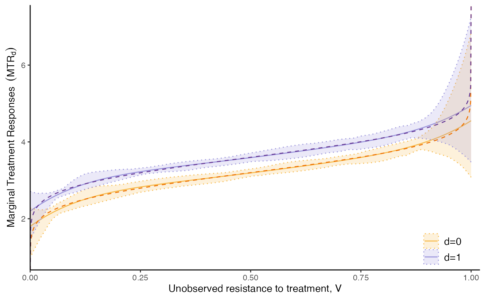

Replication, Estimator Performance: homogenous treatment effect model
Christophe Bruneel-Zupanc
Last modified: 2024-07-22
semiIVpaper_homogenous.RmdThe code below provides the code to run to replicate the Homogenous
treatment effect simulations of Bruneel-Zupanc
(2024). For an exact replication, increase the number of Monte
Carlo simulations to 500 (here, N_simul=50 for pace).
Monte Carlo Simulation functions for model with Homogenous TE
# ----------------------------------
# 1. Monte-Carlo Simulation function
# ----------------------------------
MC_fun = function(N_simul, N, param) {
param_error = param[[1]];
param_Z = param[[2]];
param_p = param[[3]]; param_y0 = param[[4]]; param_y1 = param[[5]]
param_genX = param[[6]];
model_type = param[[7]]
# 1. Monte Carlo Simulation
RES = list(); MTR = list(); MTRh = list()
k=1
while(k <= N_simul) {
# Simulate:
data = simul_data(N, model_type, param_y0, param_y1, param_p, param_Z, param_genX, param_error)
# i) Naive OLS:
naive_ols = lm(y ~ d + I((1-d)*w0) + I(d*w1), data); #summary(naive_ols)
ols_est = naive_ols$coefficients
# ii) Semi-IV 2SLS
fstage = lm(d~w0+w1, data); summary(fstage)
data$Phat = fitted(fstage)
semiiv2sls = lm(y ~ Phat + I((1-Phat)*w0) + I(Phat*w1), data); #summary(semiiv2sls)
semiiv2sls_est = semiiv2sls$coefficients
# iii) Semi-IV 2SLS-bis - probit fstage
fstage = glm(d~w0+w1, family=binomial(link="probit"), data=data)
data$Phat = fitted(fstage)
semiiv2sls_probit = lm(y ~ Phat + I((1-Phat)*w0) + I(Phat*w1), data); #summary(semiiv2sls)
semiiv2sls_est_probit = semiiv2sls_probit$coefficients
# iv) Semi-IV general
semiiv = semiivreg(y ~ d | w0 | w1, ref_indiv = data.frame(w0=0, w1=0), data=data,
trimming_value = c(0.01, 0.99),
bw0 = 0.1, bw1=0.1, bw_y0=0.1, bw_y1=0.1,
fast_robinson2 = TRUE, plotting=FALSE)
EY0 = mean(semiiv$data$RES$mtr0, na.rm=TRUE); EY1 = mean(semiiv$data$RES$mtr1, na.rm=TRUE); ATE = mean(semiiv$data$RES$mte, na.rm=TRUE)
semiiv_est = c(EY0, ATE, semiiv$estimate$est0$coefficients, semiiv$estimate$est1$coefficients)
MTR[[k]] = semiiv$data$RES;
# v) Semi-IV homogenous:
semiivh = semiivreg(y ~ d | w0 | w1, ref_indiv = data.frame(w0=0, w1=0), data=data, est_method="homogenous", plotting=FALSE)
semiivh_est = semiivh$estimate$est[1:4, 2]
MTRh[[k]] = semiivh$data$RES
# vi) IVreg:
iv = ivreg(y~d|w0+w1, data=data); #summary(iv)
iv_est = c(iv$coefficients, NA, NA)
# Save:
save = rbind(ols_est, iv_est, semiiv2sls_est, semiiv2sls_est_probit, semiiv_est, semiivh_est)
save = data.frame(save); names(save) = c("mu0", "mu1mu0", "delta0", "delta1")
save$k = k
save$method = c("ols", "iv", "semi2sls", "semiiv2sls_probit", "semiiv", "semiivh")
RES[[k]] = save
k = k+1;
if(k%%10 == 0) { print(k)}
}
res_mc = do.call(rbind, RES);
MTR = do.call(rbind, MTR)
MTRh = do.call(rbind, MTRh)
res = list(res_mc, MTR, MTRh)
return(res)
}Baseline model with semi-IVs
Specification 1
Adjust the Number of observations (N) and Number of
Monte Carlo simulations (N_simul) accordingly.
# ------------------------------------------------
# 2. Simulations with homogenous Treatment Effects - Baseline Model
# ------------------------------------------------
# Remark: param_genX are irrelevant in all simulations because I set the coefficients such that the covariates have no effect on anything;
N = 10000; N_simul=50;
# (i) Model
model_type = "homogenous"
param_error = c(1, 1, 0.6) # var_u, var_v, cov_uv # if homogenous
param_Z = c(0, 0, 0, 0, 1, 1, 0.5) # meanW0 state0, meanW1 state0, meanW0 state1, meanW1 state1, varW0, varW1, covW0W1
param_p = c(0, -0.7, 0.7, 0, 0, 0) # constant, alphaW0, alphaW1, alphaW0W1, effect of state, effect of parent educ
param_y0 = c(3.2, 0.8, 0, 0) # intercept, effect of Wd, effect of state, effect of parent educ;
param_y1 = c(3.2+0.4, 0.5, 0, 0) # the +0.2 = Average treatment effect; effect of W1, effect of state, effect of parent educ;
param_genX = c(0.4, 0, 2) # probability state=1 (instead of 0), mean_parenteduc, sd_parenteduc (parenteduc drawn as continuous)
# Remark: mean_V and the constant in the probit are playing the same role; normalize one to zero.
param = list(param_error, param_Z, param_p, param_y0, param_y1, param_genX, model_type)
# (ii) Monte Carlo:
res = MC_fun(N_simul, N, param)
#> [1] 10
#> [1] 20
#> [1] 30
#> [1] 40
#> [1] 50
res_mc = res[[1]]; MTR = res[[2]]; MTRh = res[[3]]Results of the estimation. Specification 1 in the Table of the Online Appendix
# (iii) Table of coefficients
# Table:
dmc = data.table(res_mc);
dmc[, list(mean_mu0=mean(mu0), sd_mu0=sd(mu0), mean_mu1mu0=mean(mu1mu0), sd_mu1mu0=sd(mu1mu0),
mean_delta0=mean(delta0), sd_delta0=sd(delta0), mean_delta1=mean(delta1), sd_delta1=sd(delta1)), by=method]
#> method mean_mu0 sd_mu0 mean_mu1mu0 sd_mu1mu0 mean_delta0
#> <char> <num> <num> <num> <num> <num>
#> 1: ols 3.609778 0.01394536 -0.41968256 0.01892358 0.7050172
#> 2: iv 3.516927 0.04262833 0.06117361 0.07239250 NA
#> 3: semi2sls 3.211819 0.03713813 0.38330306 0.07321947 0.7800737
#> 4: semiiv2sls_probit 3.206479 0.03392688 0.38796892 0.06593859 0.7953671
#> 5: semiiv 3.204777 0.10396056 0.40636901 0.14197412 0.8012196
#> 6: semiivh 3.201246 0.02728690 0.39843035 0.05054166 0.7987917
#> sd_delta0 mean_delta1 sd_delta1
#> <num> <num> <num>
#> 1: 0.01358256 0.5915442 0.01376828
#> 2: NA NA NA
#> 3: 0.02759336 0.4909378 0.02959361
#> 4: 0.02708549 0.5018265 0.02870017
#> 5: 0.01608017 0.4980638 0.01734865
#> 6: 0.01445555 0.4980844 0.01667331Plot. Corresponding estimated MTRs:
# (iv) Plot MTR
# a) Compute the true MTR:
seq_p = seq(0, 1, by=0.001);
w0 = 0; w1 = 0;
sigma_V2 = param_error[2]
covUV = param_error[3]
ku0 = covUV/sigma_V2*(qnorm(seq_p, mean=0, sd=sqrt(sigma_V2)) - 0) # 0 = mean(V)
ku1 = ku0 # 0 = mean(V)
true_mtr0 = param_y0[1] + param_y0[2]*w0 + ku0
true_mtr1 = param_y1[1] + param_y1[2]*w1 + ku1
true_mte = true_mtr1 - true_mtr0
newdata = data.frame(Ud=seq_p, w0=0, w1=0)
newdata$true_mte = true_mte; newdata$true_mtr1 = true_mtr1; newdata$true_mtr0 = true_mtr0
# b) MTR plot:
# Graphical options:
colMTE = "#db93a4"; colD0 = "#f7ba4a"; colD1 = "#9993db"
colMTEtrue = "#DE40AA"; colD0true = "#EE7000"; colD1true = "#663A96"
dat = data.table(MTRh);
conf_level = 0.05
CI = dat[, .(
count0 = sum(!is.na(mtr0)),
count1 = sum(!is.na(mtr1)),
count_mte = sum(!is.na(mte)),
mte = mean(mte, na.rm=TRUE),
mte_lwr = quantile(mte, conf_level/2, na.rm=TRUE),
mte_upr = quantile(mte, 1-conf_level/2, na.rm=TRUE),
mtr0 = mean(mtr0, na.rm=TRUE),
mtr0_lwr = quantile(mtr0, conf_level/2, na.rm=TRUE),
mtr0_upr = quantile(mtr0, 1-conf_level/2, na.rm=TRUE),
mtr1 = mean(mtr1, na.rm=TRUE),
mtr1_lwr = quantile(mtr1, conf_level/2, na.rm=TRUE),
mtr1_upr = quantile(mtr1, 1-conf_level/2, na.rm=TRUE)
), by = .(Phat, id)]
RES_plot = CI;
common_supp_plot = c(0, 1)
mtr_plot = mtr_plot_fun(RES_plot, common_supp_plot, conf_band=TRUE)
mtr_p = mtr_plot +
geom_line(data=newdata, aes(x=Ud, y=true_mtr0), color=colD0true, linetype="dashed") +
geom_line(data=newdata, aes(x=Ud, y=true_mtr1), color=colD1true, linetype="dashed")
mtr_p = mtr_p + theme_classic() +
theme(
legend.text = element_text(size = 11), # if needs rescaling
legend.position = c(0.97, 0),
legend.justification = c("right", "bottom"), #, # Align the legend's bottom-left corner
legend.background = element_blank()
) +
scale_color_manual(values = c("0" = "#f7ba4a", "1" = "#9993db"), labels = c("0" = "d=0", "1" = "d=1")) +
scale_fill_manual(values = c("0" = "#f7ba4a", "1" = "#9993db"), labels = c("0" = "d=0", "1" = "d=1")) +
labs(color = NULL, fill = NULL) +
ylab(bquote("Marginal Treatment Responses " ~ (MTR[d]))) +
xlab("Unobserved resistance to treatment, V") +
scale_x_continuous(limits = c(0, 1), expand = expand_scale(add = c(0, 0.02))) #+
#> Scale for colour is already present.
#> Adding another scale for colour, which will replace the existing scale.
#> Scale for fill is already present.
#> Adding another scale for fill, which will replace the existing scale.
#> Scale for x is already present.
#> Adding another scale for x, which will replace the existing scale.
#ylim(2.5, 4.6)
mtr_p
Specification 2: What if the semi-IVs are valid IVs?
Just change the effect of the semi-IVs on their respective potential outcomes to zero, and rerun the previous code.
param_y0 = c(3.2, 0, 0, 0) # intercept, effect of Wd, effect of state, effect of parent educ;
param_y1 = c(3.2+0.4, 0, 0, 0) # the +0.2 = Average treatment effect; effect of W1, effect of state, effect of parent educ;
param = list(param_error, param_Z, param_p, param_y0, param_y1, param_genX, model_type)
Bruneel-Zupanc, Christophe. 2024. “Don’t (Fully) Exclude Me, It’s
Not Necessary! Identification with Semi-IVs.” https://arxiv.org/abs/2303.12667.